Lecture 8: Neural Networks, Backpropagation
Video blocked (ad-blocker or local file mode).
Watch on YouTubeVideo not loading? Watch on YouTube
Original lecture. Tengyu Ma proves the backprop complexity theorem and derives the module-wise backward functions.
Coverage and sourcing
This lesson follows Lecture 8 of Stanford CS229 (Machine Learning, Spring 2026, instructor Tengyu Ma): “Neural Networks 2 (Backprop)”. The lecture proves the backprop complexity theorem (forward and gradient both cost O(parameters)), derives the module-wise backward functions, and covers the rank-1 gradient and second-order methods. It draws on the official subtitle transcript and the course notes. The coverage map at the end of the chapter maps every major lecture claim to the section that covers it. Figures and claims marked “October 2026” are updates added after the lecture, each with its source.
The job: train 10,000 knobs before lunch
Lecture 7 built the MLP. A modest one has 10,000 knobs. Gradient descent needs the gradient: the downhill direction for every knob. The naive way to get it is finite differences: nudge knob 1 a hair, measure how the loss moves, restore. Repeat 10,000 times. Each measurement is a full forward pass. Training one step costs 10,001 forward passes. For a language model with 1 billion knobs, one gradient step costs 1 billion forward passes. The universe ends first.
The key question: can all 10,000 (or 1 billion) derivatives be computed for the price of one forward pass?
First attempt: finite differences
Make it concrete. Loss L(w) = w^2, one knob, w = 3. Finite differences: L(3.001) - L(3) over 0.001 = (9.006 - 9)/0.001 = 6. The true derivative is 6. It works, and it is simple enough to debug anything. Its cost is the killer: n knobs need n+1 forward evaluations per gradient. For the 10,000-knob MLP, each training step pays 10,001 forward passes. Nobody trains this way, but everyone debugs this way: finite differences are the ground truth you check backprop against.
The chain rule, on a toy with real numbers
A network is a chain of simple operations. The chain rule says: if you know how the loss responds to a module’s output, you can compute how it responds to the module’s input, using only local information. Work it on a 2-layer toy, by hand, before any formalism.
forward pass: x = [1, 2] W1 = [[1, -1], [0.5, 0.5]], b1 = [0, 0] z1 = W1 x = [1*1 + (-1)*2, 0.5*1 + 0.5*2] = [-1, 1.5] a1 = ReLU(z1) = [0, 1.5] W2 = [2, -1], b2 = 0 y_hat = W2 a1 = 2*0 + (-1)*1.5 = -1.5 target y = 1 L = (1/2)(y_hat - y)^2 = 0.5 * (-2.5)^2 = 3.125
The prediction is -1.5, the truth is 1, the loss is 3.125. Now walk backward. At each step, ask: “if this intermediate value wiggled a little, how much would the loss move?” Multiply by the local slope to pass the question one step back.
backward pass:
dL/dy_hat = (y_hat - y) = -2.5
"each unit of prediction moves loss by -2.5"
dL/dW2 = dL/dy_hat * a1 = -2.5 * [0, 1.5] = [0, -3.75]
"W2's second knob matters (a1's second entry is live).
Its first knob does not (a1's first entry is 0)"
dL/da1 = W2 * dL/dy_hat = [2, -1] * (-2.5) = [-5, 2.5]
"push a1's entries along W2's direction"
dL/dz1 = dL/da1 * ReLU'(z1) = [-5 * 0, 2.5 * 1] = [0, 2.5]
"ReLU's slope is 0 at z1[0] = -1 (dead), 1 at z1[1] = 1.5 (live)"
dL/dW1 = dL/dz1 outer x = [0, 2.5]^T [1, 2] = [[0, 0], [2.5, 5]]
"each weight's gradient is downstream signal times its input"
Read the result. Every knob’s gradient came from one backward walk, reusing each module’s local slope. The dead ReLU (z1[0] = -1) zeroed a whole row of W1’s gradient: that neuron learns nothing this step, exactly lecture 7’s dying neuron, now visible in the arithmetic. One forward pass, one backward pass, all gradients. No finite differences.
Subchapter: the two-billion-multiply audit
O(N) is a claim. Audit it on the toy. Forward pass multiplies: W1 x is a 2x2 matrix-vector product: 4 multiplies, 2 adds. ReLU: 2 comparisons. W2 a1: 2 multiplies, 1 add. Loss: about 3 ops. Total forward: roughly 12 operations. Backward pass: dL/dW2 is a scalar times a vector: 2 multiplies. dL/da1 is a vector times a scalar: 2. dL/dz1: 2. dL/dW1 is an outer product: 4 multiplies. Total backward: roughly 10 operations. The backward pass costs about the same as the forward, not N times more. Scale this audit to 1 billion knobs: each module’s backward does work shaped like its forward, so the ratio stays near 2 to 1. Count, do not fear.
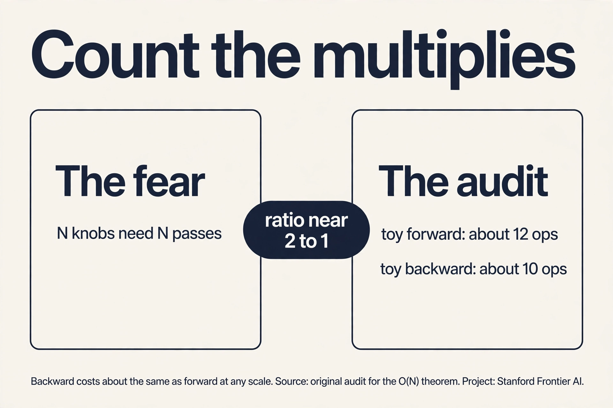
The fundamental theorem
The lecture states it as an informal theorem. A differentiable circuit with N operations computing one real-valued output: the forward pass costs O(N), and the full gradient costs O(N) too. Not O(N^2). Not N forward passes. One constant factor more than the forward pass.
Why it matters: N here counts operations, which for a network is proportional to the parameter count. The gradient for 1 billion knobs costs about as much as 2 or 3 forward passes, not 1 billion. This single fact is what makes training large models possible. The lecture’s phrasing: the gradient is “efficiently computable” at the same scale as the function itself.
The mechanism behind the theorem is modules with backward functions. Each operation (matrix multiply, ReLU, loss) knows two things: how to compute its output from its input (forward), and how to convert “gradient with respect to my output” into “gradient with respect to my input” (backward). Chain the backward functions in reverse order and the gradient pops out. Modern frameworks (PyTorch, JAX) are exactly this: a library of modules, each with a forward and a backward, composed into a graph.

Subchapter: gradient checking, the ritual
Finite differences are too slow to train with and exactly right to debug with. The ritual: after implementing a backward pass, compare it against centered differences, (L(w+e) - L(w-e)) / 2e, with e = 1e-5. Check the toy’s dL/dW2[1] = -3.75: nudge W2[1] by 1e-5 both ways, recompute the loss, and the difference quotient should match -3.75 to about 7 digits. The pass criterion is relative error below 1e-7 for float64. Every deep learning framework runs this check in its test suite: the slow method certifies the fast one. When your custom layer’s gradients look wrong, this is the first tool, not printf debugging.
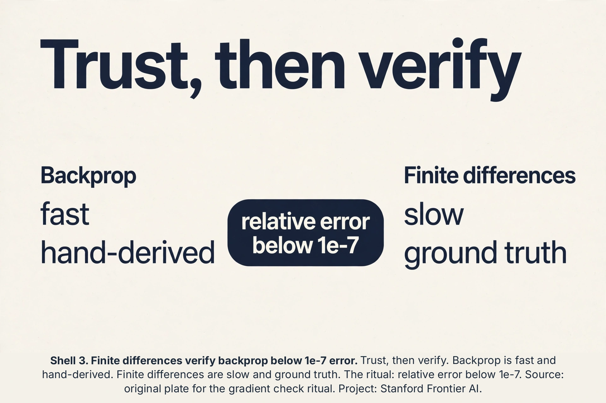
Subchapter: when the chain snaps
Backprop needs differentiability, and three common ops break it. ReLU at exactly 0: the slope is undefined, and frameworks pick a convention (usually 0 or 1). It almost never matters in practice, because landing exactly on 0 has probability zero with float arithmetic. Discrete sampling: you cannot differentiate through a coin flip, so lecture 16’s REINFORCE scores the sample instead of differentiating through it. Ties in max-pooling: two equal maxima make the “which input won” choice ambiguous, and the gradient goes to one of them arbitrarily. The rule: wherever the chain snaps, you need a substitute rule, a stochastic estimator, or a tie-break. Know the three snaps and you know where backprop’s guarantees end.
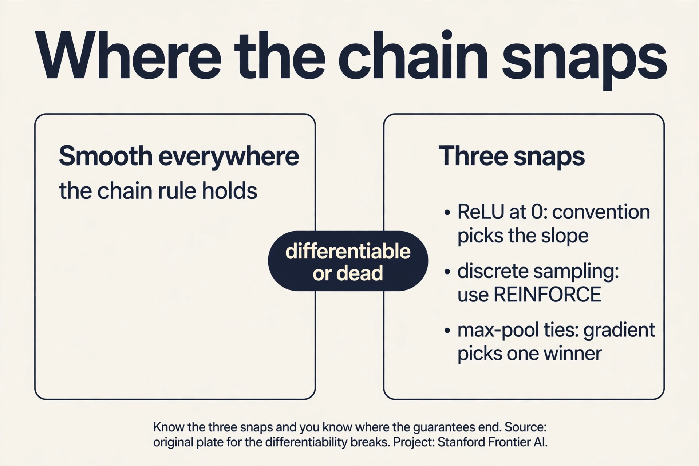
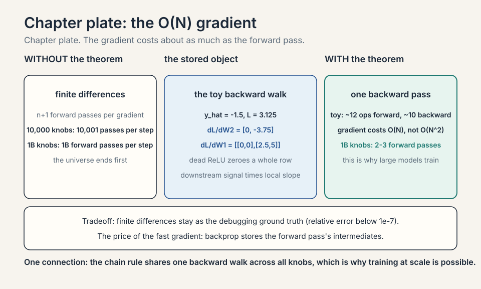
The module contract
The lecture’s central abstraction: every operation is a module with two functions. Forward: given the input, compute the output. Backward: given the gradient of the loss with respect to the output, compute the gradient with respect to the input (and the weights). The contract is local: the backward function needs only the module’s own saved values, never the rest of the network.
Subchapter: the linear module, worked
Module: y = Wx + b. Forward on the toy’s numbers: W = [[1,-1], [0.5,0.5]], x = [1,2], b = [0,0]: y = [-1, 1.5]. Backward: given dL/dy = [g1, g2], the contract returns dL/dx = W^T * dL/dy and dL/dW = dL/dy outer x. With dL/dy = [0, 2.5]: dL/dx = [10 + 0.52.5, -10 + 0.52.5] = [1.25, 1.25]. dL/dW = [0,2.5]^T [1,2] = [[0,0],[2.5,5]]. The backward function is three multiplies per weight: the same shape of work as the forward. Every module in the zoo (ReLU, softmax, convolution, attention) ships exactly this pair. Frameworks never differentiate. They compose contracts.
Subchapter: the saved tensors
The backward function needs the forward’s intermediates: the linear module’s backward needs x (for dL/dW) but not y. ReLU’s backward needs the sign of z (or the output). The framework’s tape (PyTorch) or tracer (JAX) records which tensors each backward will need and keeps them alive. Forget to save x and the backward recomputes or crashes. This is the memory bill’s origin: the tape holds every layer’s inputs until the backward pass consumes them.
Subchapter: the memory bill, priced
The backward pass needs the forward pass’s intermediates: a1, z1 in the toy. Price it. A layer with batch B and hidden size h stores B*h floats per activation tensor. A 12-layer network with B = 32 and h = 1024 stores 12 * 32 * 1024 = 393,216 floats per tensor type, about 1.5 MB per type in float32: small here, gigabytes at transformer scale. Weights are fixed cost. Activations grow with depth times batch, and they dominate training memory. The escape hatch is activation checkpointing: save only every k-th layer and recompute the rest on the backward pass. It trades one extra forward pass for a large memory cut. The O(N) theorem buys speed. Memory is the invoice.
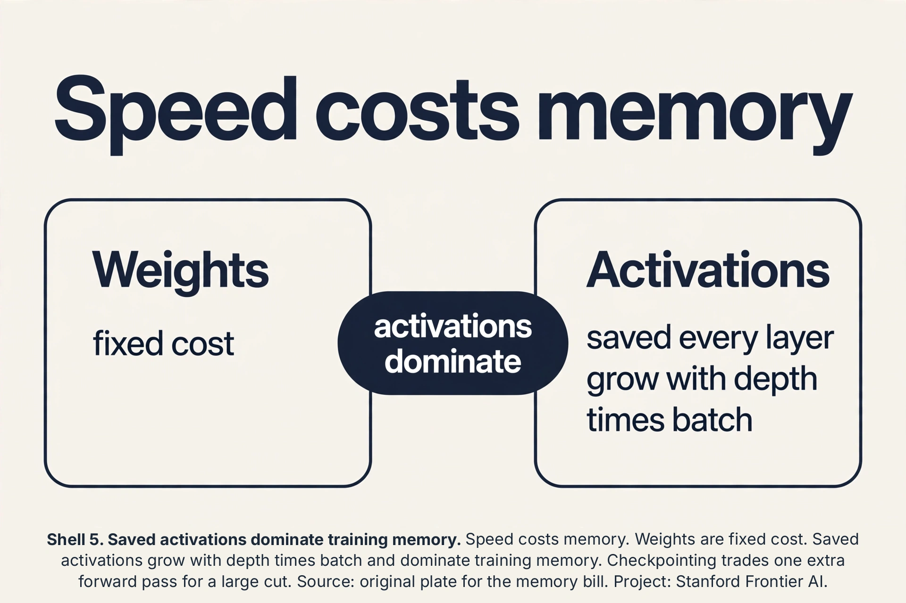
Vector-Jacobian products: the real primitive
The backward function has a formal name: the vector-Jacobian product (VJP). The Jacobian J of a module is the matrix of all partial derivatives (output dim x input dim). The VJP computes v^T * J for an incoming vector v: it projects the output-side gradient back to the input side without ever forming J.
Subchapter: why not the full Jacobian
A layer maps 1,024 dims to 1,024 dims. Its Jacobian is 1,024 x 1,024 = 1,048,576 entries. The VJP needs one matrix-vector product: about 1,048,576 multiplies, same count, but it never stores the matrix and it composes: chain VJPs and the intermediates stay vectors. Form the full Jacobian at every layer and memory dies at the first transformer block. The lecture’s module framing is the VJP in work clothes: “gradient with respect to my output in, gradient with respect to my input out” is v^T * J, computed matrix-free. The forward-mode dual is the Jacobian-vector product (JVP): push a direction forward. Reverse mode (VJP) wins when outputs are few and parameters are many (one loss, billions of knobs). Forward mode wins for few inputs, many outputs. Training is the first case. Always.
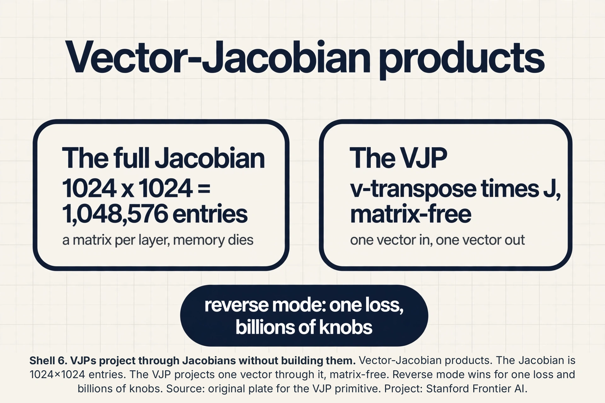
The computational graph
Unroll the network’s operations into a directed acyclic graph: nodes are values (tensors), edges are modules. The forward pass evaluates nodes in topological order. The backward pass walks the reverse order, applying each module’s VJP.
Subchapter: fan-out adds gradients
A value used twice splits the graph: x feeds both module A and module B. The chain rule says dL/dx = (dL/dA)(dA/dx) + (dL/dB)(dB/dx): the gradients from each use ADD. Work it: x = 2, A computes x^2 = 4, B computes 3x = 6, loss = A + B = 10. dL/dx = 2x + 3 = 7. The backward pass accumulates 4 (from A) + 3 (from B) = 7 at x’s node. Residual connections (lecture 7) are fan-out by design: x feeds F and the skip, so the gradient splits into the F path and the untouched skip path. The “+” node in the graph is where the two gradient streams rejoin by addition. Every skip connection in every ResNet and transformer is this addition.
Subchapter: the graph is the program
PyTorch builds the graph dynamically as the Python code runs (define-by-run): each forward op appends a node with its VJP. JAX traces the function once into a static graph, then transforms it. Same chain rule, different bookkeeping. The interview line: backprop is not a formula. It is graph traversal with VJPs at the nodes. New architectures (attention, Mamba, diffusion samplers) are new graphs, and their backward passes fall out of the same traversal.
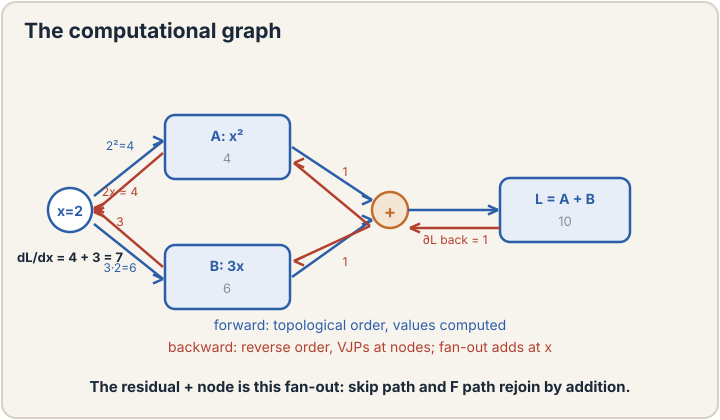
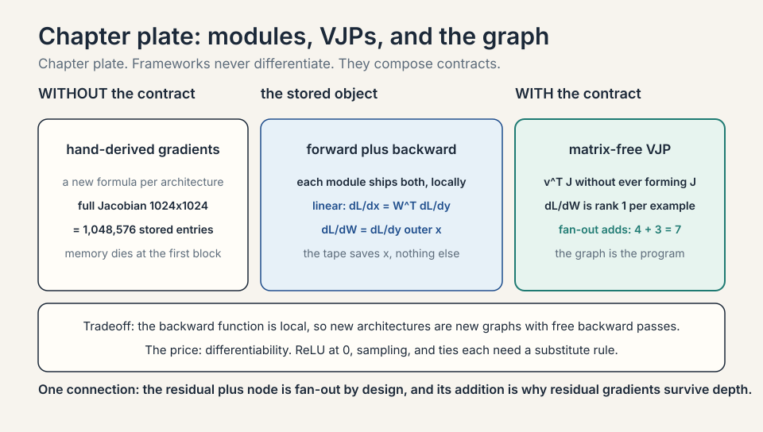
The rank-1 gradient
Look again at dL/dW2 = [0, -3.75]. It equals (dL/dy_hat) * a1: a column vector times a row vector, an outer product. An outer product always has rank 1: every row is a multiple of one vector. The lecture proves this holds for every weight matrix in the network: each gradient dL/dW is rank 1 (for one example).
This is not trivia. It means the gradient’s information is structured: the update to W is “add a multiple of (signal outer input)”. Low-rank structure is what makes some advanced optimizers and compression schemes possible. It also explains a subtle fact: the gradient never has more independent directions than the batch provides. With batch size 1, every weight update is rank 1.

Second order without the matrix
Lecture 3 priced Newton’s method at O(n d^2 + d^3): the Hessian (second-derivative matrix) is d by d, and inverting it is hopeless at scale. The lecture salvages something. You cannot form the Hessian for d = 1 billion (10^18 entries), but you can compute a Hessian-vector product H*v in O(N) time, the same cost as a gradient, using one extra backward pass through the gradient computation.
Why that suffices: many second-order methods never need H itself, only its product with vectors. Conjugate gradient, for example, solves H^-1 g by repeated H*v products. So the door to curvature information is not fully closed at scale. It is open exactly as far as matrix-free methods can walk through. The lecture’s contrast: the matrix is too big to exist, but its action on any vector is cheap.
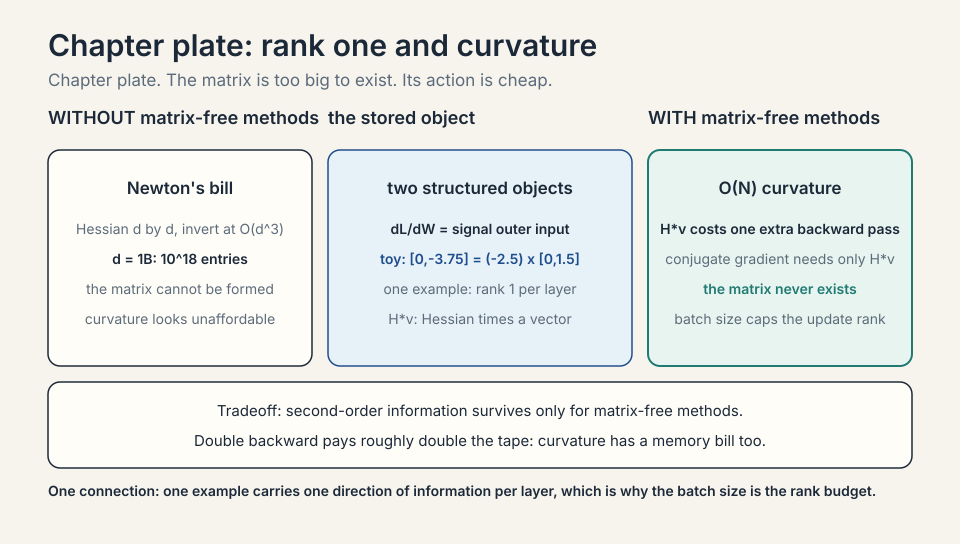
Gradient clipping: the explosion guard
The chain multiplies slopes. When they compound upward, gradients explode: one bad batch sends a weight to infinity and the loss to NaN. Gradient clipping caps the step: if the gradient norm exceeds a threshold C, scale the whole gradient down to norm C.
Subchapter: clip by norm, worked
Gradient g = (3, 4): norm 5. Threshold C = 1. Scale factor: 1/5 = 0.2. Clipped: (0.6, 0.8), norm 1. Direction preserved, magnitude capped. The update stays bounded no matter what the batch did. Why clip the norm and not each value: per-value clipping distorts the direction (it clips coordinates independently). Norm clipping keeps the direction honest and only tames the size. Standard in RNN and transformer training (lecture 14): C = 1.0 is the common default. The interview line: clipping does not fix the cause of explosions (bad init, bad rate). It keeps the run alive while you find the cause.
Checkpointing, worked
The memory bill said activations dominate. Activation checkpointing (gradient checkpointing) trades compute for memory: save only every k-th layer’s activations, recompute the rest during the backward pass.
Subchapter: the trade, priced
Twelve layers, each activation 100 MB. Full tape: 1,200 MB. Checkpoint every 4th layer: save 3 checkpoints (300 MB). Backward through layers 12-9: recompute 9-11 from checkpoint 8 (one extra forward over 3 layers), then run their VJPs. Total extra compute: about one additional forward pass over the network. Memory falls from 1,200 MB to 300 MB plus workspace. The price is 30-40 percent slower training. Decision rule: checkpoint when memory binds (first), buy bigger GPUs when money binds. Every large transformer run checkpoints: without it, the tape for a 70B model at long context does not fit on any GPU.
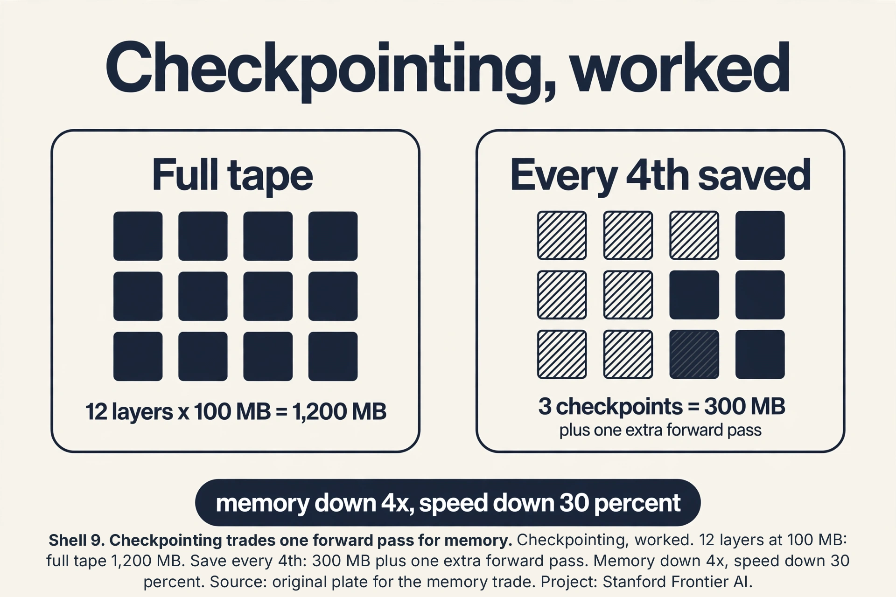
Distributed backprop: allreduce
One GPU cannot hold the batch or the model. Data parallelism copies the model to G GPUs, splits the batch G ways, and each GPU runs forward-backward on its shard. Each GPU now holds a gradient computed on 1/G of the data. The true batch gradient is the average.
Subchapter: the ring allreduce, worked
Four GPUs with gradient shards (on one weight): GPU0 has 1.0, GPU1 has 2.0, GPU2 has 3.0, GPU3 has 4.0. Allreduce sums them across GPUs and divides by 4: every GPU ends with 2.5. The ring algorithm passes shards around the ring: each GPU sends 1/G of the data per step, 2*(G-1) steps total. Bandwidth cost is independent of G: doubling the GPUs does not double the communication. Then every GPU applies the same averaged gradient to its copy: the copies stay in sync. The interview line: data parallel backprop is local backprop plus one allreduce. The math is identical to a big batch. The systems cost is the allreduce bandwidth.
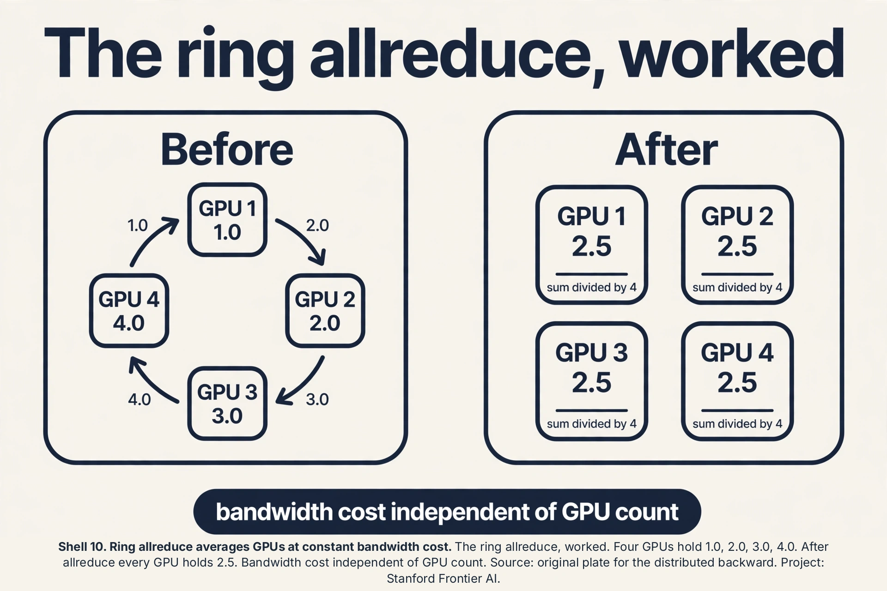
Double backward: differentiating the backward
The backward pass is itself a differentiable program: it is made of multiplies and adds. Run backprop on the backward pass and you get second derivatives. This is double backward.
Subchapter: what it buys
Hessian-vector products (the lecture’s second-order section) are double backward in disguise: differentiate the gradient computation with respect to the weights, applied to a vector. Meta-learning (MAML) differentiates through an inner optimization step: the outer gradient flows through the inner step’s backward pass. Gradient penalties (WGAN-GP) penalize the gradient’s norm, which needs the gradient of the gradient. Price: double backward stores the backward’s intermediates too, roughly doubling the tape. Most training never needs it. When you do (meta-learning, penalties, curvature), the framework gives it for free: the VJPs compose.
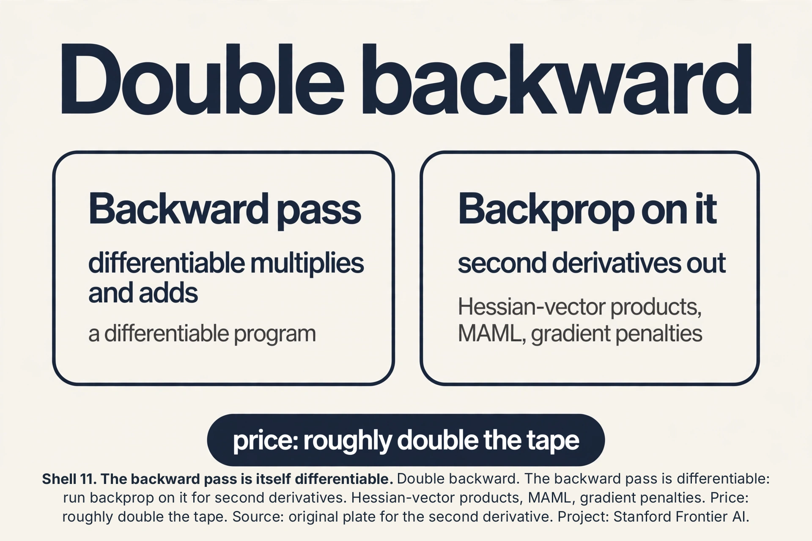
Backprop through time, the thumbnail
Sequences reuse one module across time steps: the same RNN cell runs at t = 1, 2, …, T. Unroll it: T copies of the cell in a chain. Backprop walks the unrolled chain: this is backprop through time (BPTT).
Subchapter: the shared-weight wrinkle
The T copies share one weight matrix. Fan-out adds gradients: each copy’s dL/dW accumulates into the same W. Work it: 3 steps, copies compute dL/dW of (0.1, 0.2, 0.3): the update uses 0.6. The chain through time multiplies the same Jacobian T times: if its largest eigenvalue is 0.9, the signal decays as 0.9^T (vanishing). If 1.1, it grows as 1.1^T (exploding). This is lecture 7’s depth disease rotated into time: the same multiplication, the same cure family (gating in LSTMs, clipping, careful init). Full BPTT stores all T steps’ activations: truncated BPTT processes chunks of K steps to cap the tape. The interview line: BPTT is backprop on the unrolled graph. The wrinkles are weight sharing (sum the gradients) and the repeated Jacobian (vanish or explode).
Reversible layers: the memory escape hatch
Checkpointing recomputes activations from saved checkpoints. A reversible layer goes further: design the layer so its input can be recomputed exactly from its output. Then save nothing.
Subchapter: the RevNet trick
Split the input into (x1, x2). Forward: y1 = x1 + F(x2), y2 = x2 + G(y1). Backward needs (x1, x2): recover x2 = y2 - G(y1), then x1 = y1 - F(x2). Exact, no storage. The tape for a reversible network is O(1) in depth: only the final output is saved. Price: the architecture is constrained (the split-and-add form), and the recomputation costs one extra forward pass, like checkpointing. Used where depth is extreme and memory is the wall. The interview line: reversibility trades architectural freedom for a tape that does not grow with depth.
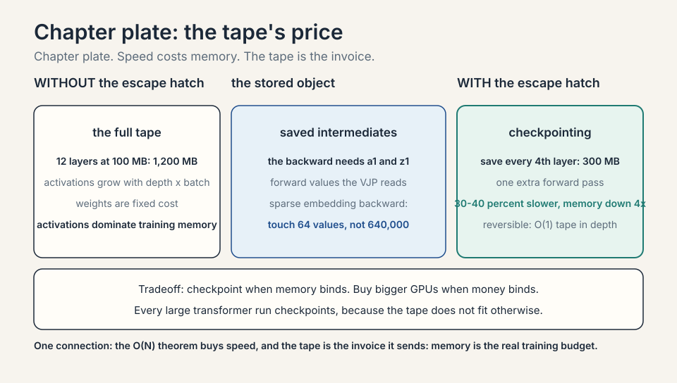
Sparse gradients: the embedding backward
The embedding lookup (lecture 7) has a special backward. Forward: look up row 3 of a 10,000-row table. Backward: the gradient flows only into row 3. The other 9,999 rows get exactly zero.
Subchapter: why sparsity matters
A dense backward would touch all 10,000 x 64 = 640,000 entries per example. The sparse backward touches 64. At vocabulary 50,000 and batch 1,024, the dense version is 50,000x the work for 49,999 rows of zeros. Frameworks implement embedding backward as indexed adds: accumulate each example’s gradient into its row. The optimizer must handle sparse updates too (Adam’s momentum for untouched rows stays stale, which is correct: no signal, no change). The interview line: embedding gradients are sparse by construction. Any dense implementation is a 10,000x slowdown bug.
The straight-through estimator
Some ops have no useful gradient: quantization rounds to the nearest integer (gradient zero almost everywhere), step functions are flat. The straight-through estimator (STE) lies productively: forward, apply the real op (round). Backward, pretend the op was the identity (pass the gradient through unchanged).
Subchapter: quantization-aware training, worked
Weight w = 0.7, quantize to 1 bit: round(0.7) = 1. Forward uses 1. Backward receives dL/dq = 0.5: STE passes 0.5 to w as if no rounding happened. w updates by the real gradient of the quantized model. The lie is principled: the quantized model’s loss really does change with w (through the rounding boundary), and the identity surrogate points the right way on average. Used in quantization-aware training (lecture 15’s quantization): train with fake quantization nodes so the deployed int8 model keeps its accuracy. The interview line: STE is a biased gradient that works. Admit the bias, ship the model.
Forward-mode autodiff: the JVP
Reverse mode (VJP) computes one loss’s gradient over billions of knobs. Forward mode (JVP) computes one input direction’s effect on all outputs. Push a tangent vector forward through the graph: each module applies its Jacobian to the incoming direction.
Subchapter: when forward mode wins
A function from 3 inputs to 1,000,000 outputs (a generator’s latent code to pixels). Reverse mode needs 1,000,000 backward passes (one per output). Forward mode needs 3 (one per input direction). The crossover: forward mode wins when inputs are few and outputs are many. Training is the reverse case (billions of knobs, one loss), so reverse mode owns deep learning. Forward mode appears in: Hessian-vector products via forward-over-reverse, neural ODEs, and sensitivity analysis. The interview line: name the mode by what is scarce. Few losses, many knobs: reverse. Few inputs, many outputs: forward.
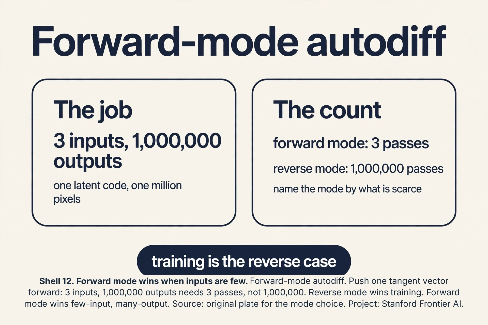
Pipeline parallelism: the backward bubble
Data parallelism copies the model. Pipeline parallelism splits it: GPU0 holds layers 1-3, GPU1 holds layers 4-6. Micro-batches flow through the pipe: GPU0 forwards micro-batch 1, hands activations to GPU1, starts micro-batch 2.
Subchapter: the bubble, priced
The pipe has a fill and drain phase: at the start GPU1 idles waiting for GPU0’s first output. At the end GPU0 idles while GPU1 finishes. With 4 stages and 8 micro-batches, the bubble (idle fraction) is about (stages - 1) / micro-batches = 3/8 = 37.5 percent of the step. More micro-batches shrink the bubble but grow the activation memory (each in-flight micro-batch holds its tape). The backward pass flows backward through the same pipe. Interleaved schedules (each GPU holds two non-adjacent stage chunks) cut the bubble further. The interview line: pipeline parallelism trades a bubble for fitting bigger models. Data parallel has no bubble but copies everything.
Gradient accumulation, worked
The batch does not fit. Gradient accumulation runs K small forward-backward passes, sums the gradients, and steps once. The math equals one big batch.
Subchapter: the sum is exact
Batch 64 does not fit. Batch 32 does. Loss on 64 examples: L = (1/64) * sum_64 l_i. Two passes of 32: pass 1 gradient = (1/64) * sum_first32 dl_i, pass 2 = (1/64) * sum_last32 dl_i (scale each pass’s mean loss by 1/2, or sum and divide once). Summed: (1/64) * sum_64 dl_i. Identical to the batch-64 gradient. The optimizer steps once on the sum. Memory: batch-32 tape. Math: batch-64 gradient. The exception is batch normalization: its mean and variance are per-32, not per-64, so the normalized values differ. With layer norm or no norm, accumulation is bit-exact in the gradient (up to float summation order). The interview line: accumulation buys batch size with time. Two passes, one step, same math.
Batch norm backward, conceptually
Batch norm’s backward is the most feared in the zoo, because the normalization couples every example to every other. Forward: x_hat_i = (x_i - mu) / sigma, with mu and sigma computed over the batch. Backward: dL/dx_i has three paths. The direct path through x_hat_i. The path through mu (x_i contributed to the mean). The path through sigma (x_i contributed to the variance).
Subchapter: why it is worth knowing
You will never hand-derive it in production (the framework does). But the structure explains two behaviors. One: batch norm’s backward is O(batch) per element with cross terms, which is why tiny batches give noisy gradients (each example’s gradient depends on 31 strangers, not 1023). Two: at test time the module uses running averages, so the backward’s coupling vanishes: train and test really are different functions. The interview line: do not derive it. Know that it couples the batch, and know why small batches suffer.
Mixed precision backward: loss scaling, worked
Float16 gradients underflow: values below 6e-5 round to zero, and early-layer gradients live down there. Loss scaling shifts the whole backward pass into representable range.
Subchapter: the scale dance
Loss L = 2.5. Scale factor S = 1024. Backward runs on 1024 * L: every gradient is 1024x larger, safely above the fp16 floor. Before the optimizer step, divide the weight gradients by 1024: the update is exact (in fp32 master weights). If any gradient overflows to inf (fp16 max is 65,504), skip the step and shrink S. Dynamic loss scaling automates this: grow S when steps are clean, shrink on overflow. Numbers: a gradient of 1e-6 underflows fp16 (rounds to 0). Scaled by 1024: 1.02e-3, representable. The interview line: loss scaling is a change of units for the backward pass. The math is identical. The floats survive.
The honest price
Backprop buys O(N) gradients and pays three prices. First, memory: the backward pass needs the forward pass’s intermediate values (a1, z1), so training stores every layer’s activations. For deep networks this dominates memory, which is why the later lectures obsess over activation checkpointing and KV caches. Second, numerical fragility: the chain multiplies many local slopes, so vanishing and exploding gradients (lecture 7, the RNN lesson) are backprop’s native diseases. Third, the theorem needs differentiability: ReLU’s kink at 0, discrete sampling, and if-statements break the chain, and each needs its own workaround. The gradient is cheap, exact, and partial: it tells you the downhill direction from here, nothing about the terrain beyond.
Mapping back
| Idea | Pain it answers | How |
|---|---|---|
| Chain rule backward walk | Finite differences need n+1 forward passes per gradient | One backward pass reuses local slopes; toy: all gradients from a single reverse walk |
| Fundamental theorem | Gradient cost seemed to scale with knob count | Forward O(N) implies gradient O(N); 1B knobs cost ~2-3 forward passes, not 1B |
| Modules + backward functions | Hand-deriving gradients per architecture | Each op ships forward and backward; frameworks compose them; the graph is the program |
| Rank-1 gradient | Gradient structure was opaque | dL/dW = signal outer input; rank 1 per example; toy W2 gradient [0, -3.75] |
| Hessian-vector products | Newton needs O(d^3); Hessian has 10^18 entries at d=1B | H*v in O(N) via double backward; matrix-free methods keep curvature affordable |
| Module contract | Each op’s backward was hand-derived folklore | Forward plus backward as a local API; linear module worked: dL/dx = W^T dL/dy |
| VJP | Full Jacobians would drown memory | v^T J matrix-free; reverse mode wins for one loss, billions of knobs |
| Computational graph | Backprop looked like a formula | DAG traversal with VJPs; fan-out adds: residual skip plus F path rejoin by addition |
| Gradient clipping | One bad batch explodes the run | Clip norm to C: (3,4) norm 5 becomes (0.6,0.8); direction kept, size tamed |
| Checkpointing | The tape does not fit | Save every 4th layer: 1,200 MB to 300 MB for one extra forward pass |
| Allreduce | One GPU cannot hold the batch | Ring sums shards: (1,2,3,4) to 2.5 on all; bandwidth cost independent of G |
| Double backward | Second derivatives looked impossible | Backprop on the backward pass; MAML, penalties, curvature |
| BPTT | Sequences reuse one cell | Unroll, walk back; shared weights sum gradients; 0.9^T vanishes, 1.1^T explodes |
| Reversible layers | The tape grows with depth | Recompute inputs from outputs: y1 = x1 + F(x2); O(1) tape in depth |
| Sparse embedding backward | Dense backward on tables is 10,000x waste | Indexed adds touch only the looked-up rows |
| Straight-through estimator | Rounding has zero gradient | Forward rounds, backward pretends identity; quantization-aware training |
| Forward-mode JVP | Reverse mode is not always cheapest | Push tangents forward; wins for few inputs, many outputs |
| Pipeline bubble | One GPU cannot hold the model | Split layers across GPUs; bubble = (stages-1)/micro-batches |
| Gradient accumulation | The batch does not fit | K small passes, sum, one step; exact except batch norm |
| Batch norm backward | The coupling confuses | Three paths: direct, through mu, through sigma; small batches suffer |
| Loss scaling | fp16 gradients underflow | Scale loss by 1024, unscale before step; 1e-6 becomes representable |
Each module’s backward function converts the gradient at its output to the gradient at its input using only local information: a matrix-vector product shaped like the module itself. Chaining these in reverse visits each module once, so the total work is proportional to the number of operations N, the same as the forward pass. The naive fear was that each of the N knobs needs its own pass. The chain rule shares the work across all knobs in one reverse walk. Every intermediate value the backward functions need: the inputs to each module (a1, z1 in the toy). That is why training memory is dominated by activations, not weights. Forget to save them and you recompute the forward pass: the price of backprop’s speed is memory.
Forward gave y_hat = -1.5, y = 1, L = 3.125. dL/dy_hat = -2.5. dL/dW2 = -2.5 * [0, 1.5] = [0, -3.75]: the first knob gets zero gradient because its input a1[0] = 0. dL/da1 = [2,-1](-2.5) = [-5, 2.5]. dL/dz1 = [-50, 2.5*1] = [0, 2.5]: the dead ReLU at z1[0] = -1 kills that path. dL/dW1 = [0,2.5]^T [1,2] = [[0,0],[2.5,5]]. Every number follows from “downstream signal times local slope”. W1[1,1] with gradient 5: it sits on the live path (a1[1] = 1.5, ReLU slope 1) fed by the largest input (x[1] = 2) with the full downstream signal (2.5). Gradient descent will move it most. The dead neuron’s row stays frozen: zero gradient, zero learning, exactly the dying-ReLU phenomenon.
For one training example, dL/dW = (backward signal) outer (forward input): a column times a row. Every row of that matrix is a multiple of the input vector, so the matrix has rank 1 no matter how big W is. In the toy, dL/dW2 = [0, -3.75] is (-2.5) times [0, 1.5]. Practical meaning: a single example’s update carries one direction of information per layer. The batch size caps the rank of the total update. Forming the Hessian needs d^2 entries and inverting it d^3 work: dead at d = 1B. But Hv, the Hessian’s action on one vector, costs O(N) via an extra backward pass through the gradient graph. Matrix-free methods like conjugate gradient only ever need Hv, so they get curvature information without ever building the matrix. The lecture’s line: the matrix is too big to exist, its action is cheap.
Recap: the whole lesson on one screen
- The job. Gradients for 10,000 knobs before lunch. Finite differences need 10,001 forward passes per step.
- First attempt. Finite differences: correct, simple, dead at scale. Kept only as the debugging ground truth.
- The key question. Can all derivatives cost one forward pass?
- The chain rule, by hand. 2-layer toy: forward gives y_hat = -1.5, L = 3.125. Backward walk: dL/dW2 = [0,-3.75], dL/dW1 = [[0,0],[2.5,5]]. Dead ReLU zeroes a row.
- The theorem. Forward O(N) implies gradient O(N). 1B knobs cost ~2-3 forward passes. This is why large models train.
- Modules. Each op ships forward + backward. Frameworks compose them. The graph is the program.
- Rank 1. dL/dW = signal outer input, per example. Batch size caps update rank.
- Hessian-vector. H*v in O(N). The matrix never exists. Curvature stays affordable for matrix-free methods.
The weight W1[1,1] multiplies input x[1] = 2 to feed z1[1]. The downstream signal at z1[1] is dL/dz1[1] = 2.5: every unit z1[1] rises moves the loss by 2.5. The rule: gradient = downstream signal times the weight’s own input = 2.5 * 2 = 5. That matches the toy’s matrix [[0,0],[2.5,5]]. Every entry of every weight gradient is this product: how much the loss cares about the output side, times what the input side fed in. The first row feeds z1[0], whose downstream signal dL/dz1[0] = 0: the dead ReLU at z1[0] = -1 killed it. Zero signal times any input is zero. The neuron learns nothing this step: the dying-ReLU phenomenon, visible as a row of zeros.
Three, in order of preference. Gradient accumulation: run two batch-32 forward-backward passes and sum the gradients before stepping. The math is identical to one batch-64 step. Activation checkpointing: save fewer intermediates, recompute on backward. Same math, about 30% slower, large memory cut. Mixed precision: float16 activations halve memory, but the math changes slightly and some ops need float32 master weights. Decision rule: accumulation first (free correctness), checkpointing second, mixed precision when speed matters too. No, if you sum the full gradients before one optimizer step: the gradient of the 64-example loss equals the sum of the two 32-example gradients. Batch normalization is the exception: its statistics are per-mini-batch, so two batches of 32 normalize differently than one of 64. With layer norm or no norm, accumulation is exact.
Three classic silent bugs. In-place operations that overwrite a saved activation before the backward pass reads it: the gradient is computed from corrupted values with no error raised. Custom backward functions with a wrong formula: the chain runs fine and returns wrong numbers. Nondeterministic ops (some GPU reductions) make the gradient irreproducible across runs. The defense is the gradient-check ritual: centered differences with relative error below 1e-7 certify any backward pass. If the check fails, the bug is in your backward, not in calculus. One-sided (L(w+e)-L(w))/e has error O(e): with e = 1e-5 the truncation error is 1e-5, too coarse to certify 1e-7. Centered (L(w+e)-L(w-e))/2e has error O(e^2) = 1e-10, which is below float64 noise and actually tests the implementation.
Because it constrains what the optimizer can do in one step. A batch-32 update to any weight matrix has rank at most 32: only 32 independent directions, no matter how many millions of weights. Optimizer designers exploit this: K-FAC approximates the curvature with Kronecker factors that respect the outer-product structure, and low-rank adaptation (LoRA) fine-tunes with rank-r updates that echo the gradient’s own low rank. The interview answer: one example, one direction per layer. The batch size is the rank budget. One direction per layer per step, not one thing: the rank-1 update still touches every weight, just along a single direction in weight space. Over many steps the directions accumulate into full-rank learning. But the per-step budget is real, and it is why tiny batches train noisily: each step commits to one direction.
The loss depends on x through both paths: L(A(x), B(x)). The multivariable chain rule gives dL/dx = (dL/dA)(dA/dx) + (dL/dB)(dB/dx): each path contributes its own chain, and they sum. In the toy: x = 2, A = x^2 = 4, B = 3x = 6, L = A + B = 10: dL/dx = 4 + 3 = 7. In real architectures this is every skip connection: x feeds F(x) and the identity path, so the backward signal splits and rejoins by addition at the + node. That addition is the entire reason residual gradients survive depth. Same rule, one wrinkle: the two uses share the weight matrix W, so both copies’ dL/dW accumulate into the single W. With 3 time steps giving (0.1, 0.2, 0.3), W’s update uses 0.6. The activations differ per step (each copy has its own x_t), but the parameter is one. Forgetting to sum (updating per copy) is a classic BPTT bug.
- The audit. Toy forward ~12 ops, backward ~10. The ratio stays near 2 to 1 at any scale.
- The ritual. Centered differences, relative error below 1e-7. The slow method certifies the fast one.
- The memory bill. Activations grow with depth times batch and dominate. Checkpointing trades compute for memory.
- The snaps. ReLU at 0, discrete sampling, max-pool ties. Know where the guarantees end.
- The contract. Forward plus backward, local. Linear module: dL/dx = W^T dL/dy, dL/dW = dL/dy outer x. Tape saves x.
- VJP. v^T J, matrix-free. Reverse mode for one loss and billions of knobs. JVP is the forward dual.
- The graph. DAG traversal. Fan-out adds gradients. The residual + node rejoins two streams.
- Clipping. Norm 5 to 1: (3,4) becomes (0.6,0.8). Direction kept, explosion capped.
- Checkpointing. 1,200 MB to 300 MB for one extra forward. The 4x memory cut costs 30 percent speed.
- Allreduce. (1,2,3,4) to 2.5 everywhere. Data parallel is local backprop plus one ring sum.
- Double backward. Backprop on the backward pass. H*v, MAML, penalties. Double the tape.
- BPTT. Unroll the cell, walk back. Shared W sums gradients. 0.9^T vanishes, 1.1^T explodes.
- Reversible. x2 = y2 - G(y1). O(1) tape in depth, one extra forward, constrained architecture.
- Sparse. Embedding backward touches only looked-up rows. Indexed adds, not dense multiplies.
- STE. Forward rounds, backward pretends identity. Biased gradient that ships quantized models.
- Forward mode. JVP pushes tangents forward. Few inputs, many outputs: 3 passes beat 1,000,000.
- Pipeline. Split layers, not batches. Bubble = (stages-1)/micro-batches: 37.5% at 4 stages, 8 micros.
- Accumulation. Two batch-32 passes sum to one batch-64 gradient. Exact, except batch norm’s per-batch statistics.
- Batch norm backward. Three paths: direct, through the mean, through the variance. Small batches, noisy gradients.
- Loss scaling. 1024x the loss, unscale before the step. fp16 underflow defeated.
What is used where
Every training pipeline runs this lesson. PyTorch autograd and JAX grad are module-and-backward-function systems exactly as the lecture frames them: each op ships a vector-Jacobian product, and the framework chains them. Gradient checkpointing is standard in large-model training runs. The gradient-check ritual lives in every framework’s test suite and in any team that writes custom CUDA kernels or custom autograd functions.
Distributed training is allreduce plus this lesson. Data-parallel runs (every large pre-training job) average gradients with ring allreduce before each optimizer step. Gradient clipping at norm 1.0 is the default guard in transformer training configs. BPTT is the training loop for every RNN, and its truncated variant caps the tape for long sequences.
Watch next
Explainer: 3Blue1Brown, What is backpropagation really doing? Grant Sanderson animates the chain rule on a tiny network. Watch after the toy walkthrough.
Go deeper
- Yes you should understand backprop (Karpathy, 2016)
- Karpathy’s guided tour of the chain rule on a tiny circuit, with the “pullback” intuition. Matches the module-contract sections. (Medium blocks bots. Open in a browser.)
- PyTorch autograd mechanics
- The official notes on how the tape records VJPs, when graphs are freed, and how double backward composes. Matches the tape and graph sections.
Official sources and further reading
Official: - Lecture 8 video, Stanford Online YouTube: - Tengyu Ma states the complexity theorem, builds the chain rule via modules and backward functions, and derives the rank-1 gradient and Hessian-vector products. - Official subtitle transcript (en-US): the lecture’s spoken text. - CS229 Spring 2026 official course notes (local PDF): the formal theorem statement and derivations.
Caveats from these sources. The theorem is stated informally in the lecture (“if you really want to make it formal you need a lot of jargon”). The precise circuit model is in the notes. The 2-layer toy in this lesson is an original miniature demonstrating the lecture’s module/backward-function framing with the lecture’s conventions. The “1 billion knobs” scale is the lecture’s motivating regime for the theorem.
Connections to the other courses
- CS229 L02: gradient descent, the consumer of the gradients this lesson produces.
- CS229 L07: the MLP architecture whose knobs backprop trains. The dying ReLU visible in the toy’s arithmetic.
- CS229 L14-L15: backprop at transformer scale: activation memory becomes the KV cache problem.
- CS336: the O(N) theorem in practice: how frameworks implement backward functions on GPUs.
- CS224N: backprop through time: the chain rule unrolled over sequences.
Coverage map: every lecture claim and where it lives
| Lecture claim | Covered in | File line |
|---|---|---|
| 10,000 knobs need gradients before lunch; finite differences need 10,001 passes | The job; First attempt: finite differences | L47, L61 |
| Chain rule on the 2-layer toy: y_hat = -1.5, L = 3.125 | The chain rule, on a toy with real numbers | L72 |
| Backward walk: dL/dW2 = [0,-3.75], dL/dW1 = [[0,0],[2.5,5]] | The chain rule, on a toy with real numbers | L72 |
| Dead ReLU zeroes a row of W1’s gradient | The chain rule, on a toy with real numbers | L72 |
| Two-billion-multiply audit: backward ~ forward cost | the two-billion-multiply audit | L123 |
| Fundamental theorem: forward O(N) implies gradient O(N) | The fundamental theorem | L138 |
| Gradient checking ritual: centered differences, 1e-7 | gradient checking, the ritual | L164 |
| Module contract: forward plus backward, local | The module contract | L195 |
| Linear module worked: dL/dx = W^T dL/dy = [1.25,1.25] | the linear module, worked | L204 |
| Saved tensors: the tape holds x for dL/dW | the saved tensors | L216 |
| VJP: v^T J matrix-free; reverse vs forward mode | Vector-Jacobian products | L243 |
| Computational graph: DAG, topological order | The computational graph | L269 |
| Fan-out adds gradients: 4 + 3 = 7; residual + node | fan-out adds gradients | L276 |
| Rank-1 gradient: dL/dW = signal outer input | The rank-1 gradient | L302 |
| Memory bill: B*h floats per tensor; activations dominate | the memory bill, priced | L227 |
| Hessian-vector products in O(N), matrix never exists | Second order without the matrix | L319 |
| Chain snaps: ReLU at 0, discrete sampling, max-pool ties | when the chain snaps | L179 |
| Gradient clipping: (3,4) to (0.6,0.8) at C = 1 | Gradient clipping | L337 |
| Checkpointing: 1,200 MB to 300 MB, one extra forward | Checkpointing, worked | L357 |
| Allreduce: (1,2,3,4) to 2.5; ring bandwidth | Distributed backprop: allreduce | L379 |
| Double backward: MAML, penalties, curvature | Double backward | L402 |
| BPTT: unroll, shared weights sum, 0.9^T vs 1.1^T | Backprop through time, the thumbnail | L423 |
| Reversible layers: x2 = y2 - G(y1); O(1) tape | Reversible layers | L445 |
| Sparse embedding backward: indexed adds | Sparse gradients | L463 |
| Straight-through estimator for rounding | The straight-through estimator | L481 |
| Forward-mode JVP: few inputs, many outputs | Forward-mode autodiff: the JVP | L503 |
| Pipeline bubble: (stages-1)/micro-batches | Pipeline parallelism | L525 |
| Gradient accumulation: two batch-32 passes equal batch 64 | Gradient accumulation, worked | L546 |
| Batch norm backward: three paths through x_hat, mu, sigma | Batch norm backward, conceptually | L567 |
| Loss scaling: 1024x shift defeats fp16 underflow | Mixed precision backward | L588 |
Sources
- VIDEOLecture 8 video, Stanford Online YouTube
- VIDEOExplainer: 3Blue1Brown, What is backpropagation really doing?
- ARTICLEKarpathy, Yes you should understand backprop (2016)
- NOTESOfficial subtitle transcript (en-US)
- NOTESCS229 Spring 2026 official course notes (local PDF)